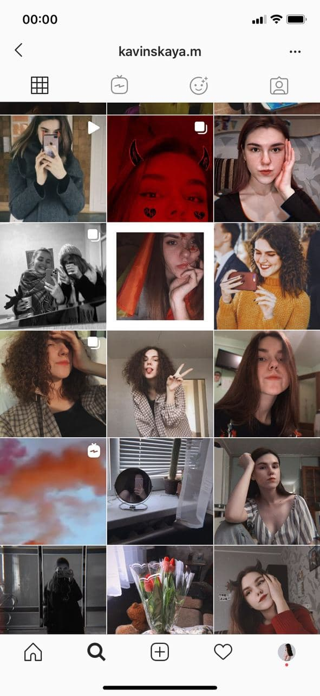
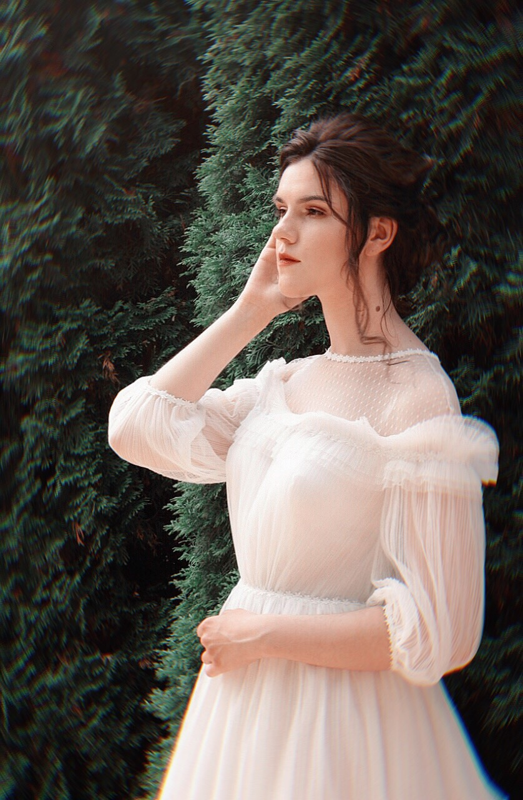

Кто такая Полина Урбан?????


Полина Урбан
19 годиков, живёт на 19 этаже. Поступила в академию в 19 году
Обожает Веб-дизайн и аип.
Любит смотреть сериальчики и слушать музычку.
Спортсменка, комсомолка и просто красавица!
Хочешь узнать больше про Полину Урбан? Жми на кнопку!